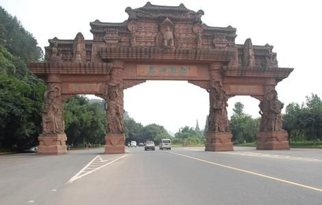
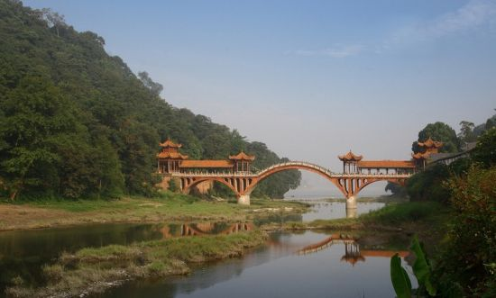
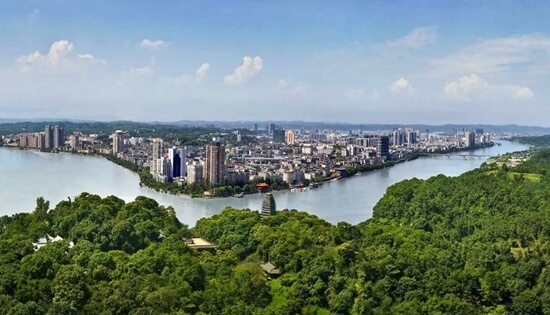
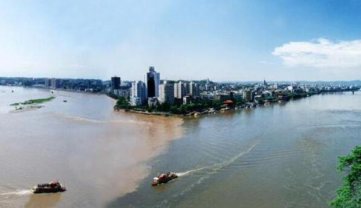

morly旅游圈
美的感受是一种精神洗礼。5月17日，我们乐山各界的10位摄影、文学爱好者，在嘉阳矿区乘上了有“工业革命活化石”之称的世界唯一尚在运行的窄轨蒸汽小火车。那“晃舞”的感觉有如坐“过山车”一样，不一会儿就到了芭沟镇。 “说起芭蕉沟，心里凉悠悠，跟着工人走，又有烟儿抽，再过三五年，还有娃儿逗”，这首当地民谣印证了芭沟历史上曾经的辉煌。如今，这里还完整保留着的小角楼民居建筑群，在山林的掩映中层层叠叠。雨中的我们用塑料袋包住相机，把苏式风格的“矿山博物馆”、中英街、红色广场、芭蕉石、情人榕、红瓦寺、白石崖这些穿越岁月的痕迹全部揽入怀中。 我们又乘“老爷车”穿驶在芭马峡，有“植物活化石”之称的桫椤树似一把把撑开的伞夹道欢迎我们！这三亿年前白垩纪的珍贵木本蕨类植物是国家一级保护植物，在几十里长的峡谷内首尾相连、蔚为壮观，可惜没看见恐龙！ 我们荡舟在桫椤湖中，潘姓老人娓娓讲述着尘封的历史和当地的风土人情；大家打着拍节伴和着我那悠扬的口琴声，歌声洒落湖面，仿佛童年时代又回到了身边！ 在犍为文庙，导游娴熟的讲解使大家对泮池、大殿、石刻雕塑及文庙建筑中独一无二的“飞角三重檐”有了新细的了解，国学的教化使这座有600多年历史、规模川内第一的大庙散发出浓郁的历史人文气息！ 在罗城古镇，那古色古香的旧房老馆、那飘旌的茶铺和惬意的牌客、那神秘的灵官道殿和精致的戏台、还有从高处俯视200米长的“旱码头”船形古镇，无不催生我们对历史的崇敬！ 犍为那令人诞流的泉水鱼、串串香、薄饼和香都茉莉等名食，同“百年火车、千年庙镇、万年湖泊、亿年桫椤”的旅游资源融汇一体，把古郡的动与静有机结合，使我们充分感受到她“远近高低各不同”的美和热情质朴的力！ 这就是古韵犍为，一幅色彩凝重、格调沉稳、层次立体、韵味质朴的油画——我爱这幅画，并永远珍藏她……
乐山，古称嘉州，是四川省下辖的一个地级市，介于东经102°15′-104°15′、北纬28°28′-29°56′之间，乐山位于四川盆地西南部，坐落在岷江、青衣江、大渡河三江交汇处，北与眉山接壤，东与自贡、宜宾毗邻， 南与凉山相接，西与雅安连界，中心城区距成都双流国际机场仅100公里。成都平原南部中心城市。 乐山是四川粮食、副食品、清洁能源、新材料和建材生产基地，国家质检总局批准的国家硅材料及副产物产品质量监督检验中心。 历史上属古蜀国，有"海棠香国"的美誉。乐山市是国家历史文化名城、国家首批对外开放城市、全国绿化模范城市、中国优秀旅游城市、国家园林城市、全国卫生城市、2008北京奥运会火炬传递城市之一。 2000年6月，乐山正式成为联合国城市管理中心在中国唯一的合作城市。2015年11月18日，四川省人民政府正式确立乐山为全省旅游综合改革试点市。 2015年12月20日，乐山市被国家旅游局批准为首批国家级旅游业改革创新先行区。
乐山地处四川盆地向西南山地过渡地带，总体趋势西南高，东北低，高差悬殊大。最高处为峨边彝族自治县马鞍山主峰，海拔4288米，最低处是犍为县新民镇马厂坝岷江出口，海拔307米，相对高差3981米，平均海拔500米，乐山城区海拔360米。地貌有山地、丘陵、平坝三种类型，以山地为主。山地面积8530k㎡，占全市幅员面积的66.5%，主要分布于市境峨眉山、峨边、金口河、马边、沐川一线的西南部，是凉山高原与四川盆地过渡地带。丘陵面积2694k㎡，占乐山市幅员面积的21%， 主要分布于峨眉山、沐川一线的东北部，是受缓慢上升长期剥蚀而形成的红色丘陵区。河谷平原面积1603k㎡，占全市幅员面积的12.5%，主要沿岷江、大渡河、青衣江两岸分布。 乐山在特定地理环境条件下形成了多种气候类型。因地域处在北纬29°附近，全市属中亚热带气候带，具有四季分明的特点，雨量丰沛，水热同季，无霜期长。年平均气温在16.5-18.0度之间，年平均无霜期长达300天以上，年平均霜日4.2-9.4天，年平均降雪日数仅1.0-2.7天，是水稻、小麦、油料、糖料、水果、棉花等农副产品的高产区。西南山区气候垂直差异明显， 从山麓至山巅依次分布着中亚热带一暖温带一温带一寒温带的完整气候带，气候条件十分复杂，是地域内发展农业综合经营和立体农业的区域，是木材、茶叶、中药材等作物的主产区，也是宝贵的旅游资源。受季风影响和地形的抬升作用，气候湿润，雨量丰沛。绝大多数地区年平均降水量在1000毫米以上，峨眉山市达1500毫米以上，仅峨边、金口河少于1000毫米以下，降水有季节性变迁， 夏秋季雨量占全年的80%左右，冬春季只占20%，降水的年际差异较大，年最少降水量多在900毫米以下，部分地区年最多降水量达2000毫米以上。
美的东西总是耐人寻味的。我祝福发生过的一切，旅游的逐梦为心灵铺开了一幅幅逸趣横生的画图，而追寻美景的情愫透过迷人的风景衍生出胜于风景的惬意美感！
哦，相思美景中……
内容整理至网络，如有侵权，请联系我们！1255394075@qq.com
